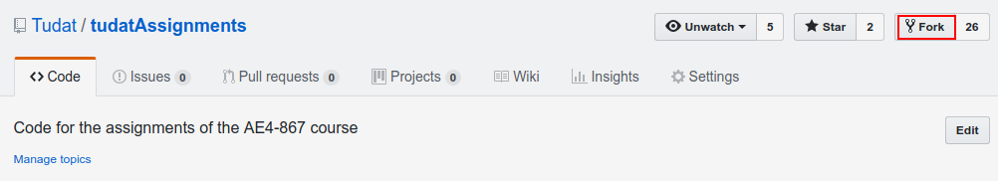
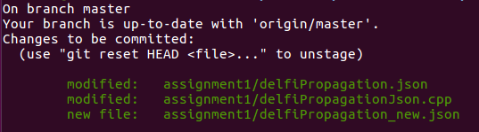

Creating Tudat Applications - Git¶
Now that you’ve installed Tudat, you can run all of the example applications and unit tests at your leisure. On this page, we will describe how to create other Tudat applications, specifically tuned to your research/education project. There are two broad options for creating applications: pulling an existing application from Github (or elsewhere), or creating an application from scratch. Below, both are discussed. New applications are typically added to the tudatBundle/tudatApplications folder, which is empty by default.
Note
It is not the goal of this page to give a full-fledged introduction to repository management, git or Github. Much more details can be found online, for instance in the Resources to learn Git Github Help. This page is meant to serve as a starting point for using git with Tudat, using examples that are very close to a typical user’s first Tudat experience.
Getting an Existing Tudat Application¶
Below, we discuss how to retrieve an application from an existing Github repository, how to retrieve any updates that may come available after you’ve downloaded it, and how to send the code to your own Github account. As an example, we will use the tudatAssignments repository.
Step 1: Fork the application on Github
The first step in the workflow of retrieving an application is to “fork” it. Forking means that you will create a copy on your own Github page, which is identical to the original. The reason to do so is that, typically, you will not have permission to modify the original repository, and have to save any modifications you make under your own account. To do so, first make sure you’re logged into Github, and then go the repository page for the application you want to retrieve, and click the “fork” button at the top (see screenshot).
After doing so, you will have created your own local version of the
tudatAssignmentsrepository.
Step 2: Clone the application to your system
Now, the next step is to create a version of the code on your computer, which is linked to your own Github page. Using the terminal (or the
tudat_shell.batprogram when using Windows), navigate to thetudatBundle/tudatApplicationsdirectory. Then, use the following command in the terminal:git clone https://github.com/YourName/tudatAssignments.gitwhere
YourNameshould be replaced with your Github account name (so that it corresponds to the URL to where you’ve forked the repository).
Step 3: Modify Repository Settings, and invite (a) collaborator(s) to (private) repository (optional)
Note
IMPORTANT, when setting up a repository for use in the AE4866 or AE4868 courses, make sure to set the repository to private, and invite @dominicdirkx and @transferorbit.
Go to the
Settings/Collaboratorsof the repository. Add other users that you want to invite to the repository.
Step 4: Adding the application to your Tudat compilation
Open the top-level
tudatBundle/CMakeLists.txtand add the directory to the bottom of the file using the folder where you’ve just cloned the repository to:add_subdirectory( "${PROJECTROOT}/tudatApplications/tudatAssignments")When opening the tudatBundle project in Qt, you’ll see your new application(s) added to the project tree, and the corresponding executable added to the list of applications you can run.
Pulling and Pushing Application Code¶
Now, we are ready to discuss two distinct but related aspects of developing your code: retrieving modifications from the original repository, called pulling (here:
https://github.com/tudat/tudatAssignments.git) and uploading your modifications to your own repository, called pushing (here:https://github.com/YourName/tudatAssignments.git).
Step 1: Setting up your remotes
In git, a
remoteis an address of an external repository (in this case on Github). You can set any number of remotes you like for a given repository. You can view all your remotes for a given Git repository by using the:git remote -vcommand in your terminal. Running this command will likely result in the output (for now, forget about the distinction between pull and fetch):
origin https://github.com/YourName/tudatAssignments (fetch) origin https://github.com/YourName/tudatAssignments (push)Typically, you will have two: an
originand anupstream, which is also the convention we’ll stick to here. Theoriginremote is the one from where you’ve cloned the repository, in this case your own Github version of thetudatAssignmentsrepository. This remote will have been set automatically when cloning the code. With the way the repository is set up, you are ready to update your own Github version oftudatAssignments. To also retrieve new code from the original tudat repository, we need to add an additional remote, theupstream. To do so, use the following terminal command:git remote add upstream https://github.com/tudat/tudatAssignments.gitRerunning the
git remote -vcommand should now result in:origin https://github.com/YourName/tudatAssignments (fetch) origin https://github.com/YourName/tudatAssignments (push) upstream https://github.com/tudat/tudatAssignments (fetch) upstream https://github.com/tudat/tudatAssignments (push)
Step 2: Making local commits
Before you can push changes to your Github account, you must first
commit(save) these changes locally on your computer. A commit provides a snapshot of the current version of the code, to which you can return at later points in time.Tip
When finishing a part of the code to your own satisfaction, or making clear progress in your work: commit your code. This does not override any old or later commits, but will provide a way to go back to your current version of the code.
The first step in making commits is usually to check what has changed w.r.t. the previous commit. To check this, type the command:
git statusThis should given an output similar to that given below:

In this example, we have modified two existing files, and created a new file.
Now, before committing, you must
stagechanges for commit. To stage all changes shown by thegit statuscommand for commit, use:git add .For the example given above, this will result in:
If you only want to stage a single file, or folder, use:
git add FolderName/ git add FileName.extwhere
.extis just an arbitrarily chosen extension. You can also use:git add FolderName/FileName.extto stage a single file in a folder. You can combine as many
git addcommands as you like to stage all your files for commit.Now, committing your code is done by:
git commit -m"Your commit text here"The text between the quotes will show up in your commit log, and should ideally describe the current state of your code: which changes have you made since the last commit?
Step 3: Pushing your commits to Github
After committing the code, you will have made a snapshot of the current version of the code, on your local system only. If you want to share it with others, the best way is to push it to an online repository (typically Github). Assuming you’ve set up your remotes as defined above, you can use:
git push origin masterThis will push your code to the
originremote. Themasterterm denotes the current branch you are working on. Branch management is beyond the scope of this tutorial, and you may safely ignore these issues for now.If you have set up your repository to be private, you will be prompted to enter your Github username and password. After a push is succesfull, you should see your changes on the Github page for your applications, available for everyone (in case it is public) or a selected few (in case it is private).
Updating your local repository from Github¶
After following the above guide, you’ll have created a git repository on your computer, based on some remote from Github. Typically, commits are regularly done to Github repositories, and it may happen that you want to update your local code with the modifications of the remote. For this example, we’ll assume that there has been some modification of the
upstreamremote (at https://github.com/tudat/tudatAssignments), and that you want to update your local version of the code (both on your computer, and on your own Github page).
Step 1: Committing any local changes
Before pulling the latest code from Github, commit ay modifcations you’ve made, using the
git addandgit commitcommands described above. Not doing so will cause the following error message when pulling:error: Your local changes to the following files would be overwritten by merge: file_name Please, commit your changes or stash them before you can merge. AbortingThis error is given as a safety measure, since pulling the latest version of the code may inadvertently, and irreversibly, overwrite your won changes.
Step 2: Fetching and Pulling the Remote
The next step in updating the code is to type:
git fetch upstreamThe
fetchcommand does not update the code on your computer, but makes your local git repository aware of any changes make to a remote (theupstreamin the above example). Next, you willpullthe code from theupstreamwith the following command:git pull upstream master
Note that we are still assuming that only the
masterbranch is relevant for our current application. Thepullcommand will have one of two possible outputs (assuming you’ve correctly performed step 1). Either no error is given, and the pull has been succesful, or there are conflicts with changes you’ve made, which will give the following error message:Pull is not possible because you have unmerged files. Please, fix them up in the work tree, and then use 'git add/rm <file>' as appropriate to mark resolution, or use 'git commit -a'.In case you get this message, go to step 3
Step 3: Solving Conflicts (if needed)
As is often the case, changes you have committed on your own computer will not be compatible with changes that have been made to the remote you are pulling. The list of files with merge conflicts will be shown when using the
git statuscommand. The resulting merge conflicts are typically corrected manually, where the user decides how to update the code after a pull. A merge conflict will show up in your code as:<<<<<<< HEAD Remote modifications ======= Your modifications >>>>>>> masterClearly, this code will not compile anymore. You can change this block to either:
Remote modificationsor
Your modifications
or something else entirely,as you see fit for the case ar hand.
After correcting all conflicts, use the
git addandgit commitcommands to commit your merged code.
Creating a New Tudat Application¶
For some projects, you will want to start your own application repository from scratch. Here, we briefly explain how to set this up, while details of the code itself (e.g. CMake settings) are discussed on the page setupNewApps.
Step 1: Initializing the repository
To create a new git repository, use the terminal to navigate to the directory of this new repository and type:
git initThis will create a new, empty, repository in the current directory. Using the same
git addandgit commitcommands as above, you can add files to the repository as you see fit.Before (or after) doing so, you can add a
.gitignorefile to your repository (see Tudat repository for a typical example). This file can contain a list of files, directories, file extensions, etc. that git will normally ignore when using thegit statusorgit add. For example, you may want to keep.datfiles, or abin/directory outside of your repository. As an example, thetudatApplicationsdirectory is in the.gitignorelist oftudatBundle, as application commits are not added to the bundle repository.
Step 2: Creating a Github Repository
Now that you’ve created a local repository on your system, you need to create a new Github project, to which you can push your code. On the Github main page, click
Start a Project(make sure you are logged in first). You will be prompted to provide some baisc information on your new repository (and declare it public or private). After clickingCreate Repository, your new (empty) Github repository will be created.Now, we need to tell your local repository where this new Github project is located. Using the same tools as above, use the
git remote addcommand to add your new repository as theorigin. For instance:git remote add origin https://github.com/UserName/MyNewTudatApplication.gitYou are now free to push your code to this repository.